The one word for AI after 2020 is scale. Models got so big that only a handful of companies can train them, so those companies now rent them out through an API ("model as a service"). That flips the work: instead of training a model, most teams now adapt and evaluate a model somebody else trained. This chapter tells how we got here (language model → large language model, thanks to self-supervision → foundation model, thanks to more data types), surveys what people actually build (coding, images, writing, education, bots, summarising, data organisation, automation), asks whether you should build at all (risk, role of AI and humans, moats, metrics, the hard last mile, maintenance), and ends with the three-layer AI engineering stack and how it differs from classic ML engineering: less training, more prompting, evaluation and interface work.
The chapter is a chain. Each row answers a question raised by the row before it. Orange boxes are the big ideas.
Huyen opens with a single word: scale. The models behind ChatGPT, Google's Gemini and Midjourney are so big that they use a noticeable share of the world's electricity, and we may run out of public internet data to train them.
Scaling up has two big effects:
Put together: demand for AI apps went up while the barrier to building them went down. That is why AI engineering, building applications on top of models that already exist, became one of the fastest-growing engineering fields.
Building on ML (machine learning) models is not new. Long before LLMs, AI powered product recommendations, fraud detection and churn prediction (guessing which customers will leave). Many rules for running AI in production stay the same, but the new generation of huge, ready-made models brings new possibilities and new problems, and those are what the book is about.
The chapter plan: (1) an overview of foundation models, the spark behind the AI engineering boom; (2) a tour of successful use cases, each one showing what AI is good and not yet good at (existing patterns give clues about the future even though it's hard to predict); (3) the new AI stack: what changed, what stayed the same, and how an AI engineer differs from a traditional ML engineer.
Footnote 1: in this book, traditional ML means all ML that came before foundation models.
Electricity in India. Very few companies can build a power plant, but every kirana shop can plug in a fridge and sell cold drinks. The power plants are the foundation-model labs; the shops plugging in are AI engineers. Where it breaks: electricity is the same everywhere, but models differ a lot in quality, price and quirks, so choosing and tuning the "supply" is a big part of the job.
Training cost grows with model size and data size, so the fixed cost of a frontier model is huge. Once trained, though, the extra cost of serving one more customer is small. That economics (high fixed cost, low marginal cost) pushes labs to sell access widely, which is exactly what makes AI engineering possible for everyone else.
"What is AI engineering and why now?" Answer: "AI engineering is building products on top of pre-trained foundation models instead of training our own. It took off because scale made models general enough for many tasks, and model-as-a-service APIs removed the cost of training. So the work moved from modeling to adapting, evaluating and serving." In your own work, a voice agent built on a hosted LLM is this exact pattern.
Foundation models grew out of large language models, which grew out of plain language models. ChatGPT and GitHub's Copilot looked like they came from nowhere, but they are the result of decades of work: the first language models appeared in the 1950s. This section follows the key breakthroughs along that path.
The first step, language model → large language model, only became possible with self-supervision. The next plates explain what a language model is and what self-supervision means (Huyen says readers who know this can skip it).
A railway line built in stages: first a narrow-gauge track (language models), then broad gauge so heavier trains fit (LLMs, made possible by self-supervision), then electrified so it can carry anything (foundation models with images and audio), and finally a busy timetable of passenger services run by many operators (AI engineering). Where it breaks: rail upgrades are planned; AI's steps came from research breakthroughs nobody fully planned.
A language model holds statistical information about one or more languages. In plain terms, it knows how likely a word is to show up in a given context. Given "My favourite colour is __", an English language model should guess "blue" more often than "car".
People knew language was statistical long ago:
Early language models covered one language; today one model can cover many.
The basic unit of a language model is the token. Depending on the model, a token can be a character, a whole word, or a piece of a word (like "-tion"). GPT-4, one of the models behind ChatGPT, splits "I can't wait to build AI applications" into nine tokens; notice that "can't" becomes two tokens, "can" and "'t". OpenAI's website lets you see how its different models split text.
How to read this figure. Each coloured block is one token. Count the blocks: most words are a single token, but "can't" is split into "can" + "'t". (The printed figure's phrase also contains the word "awesome", which the text leaves out; either way, the point is that token boundaries don't always match word boundaries.)
Tokenization is the process of cutting text into tokens. For GPT-4, an average token is about ¾ of a word, so 100 tokens ≈ 75 words.
The set of all tokens a model knows is its vocabulary. A small set of tokens can build a huge number of words, like a few alphabet letters build many words. Mixtral 8x7B has a vocabulary of 32,000; GPT-4 has 100,256. The model's developers choose the tokenization method and vocabulary size.
Footnote 2: for non-English languages, a single Unicode character can sometimes become several tokens.
Tokens are the middle ground: fewer units than words, but more meaning per unit than single characters.
Type any sentence. This toy splits on spaces and punctuation, then breaks off a few common English suffixes (-ing, -tion, -ed, -ly, -'t, -'s). It is not GPT-4's tokenizer (that uses byte-pair encoding, covered in Chapter 2), just a way to feel what sub-word splitting does.
Toy splitting rules are modelled. The 100 tokens ≈ 75 words ratio is the book's figure for GPT-4.
Tokens are like the pieces in a Hindi/Devanagari typeset tray: not single strokes (characters), not whole words, but common syllable blocks you combine. With a few thousand blocks you can print any word, even ones you've never seen. Where it breaks: a typesetter picks blocks by linguistics; tokenizers pick them from frequency statistics, so splits can look odd ("'t" as its own piece).
The model can only ever output an item from its vocabulary, one at a time. A bigger vocabulary means each token carries more meaning (fewer steps per sentence) but the output layer grows; a smaller vocabulary is cheaper per step but needs more steps. Developers pick a size like 32k or 100k as a compromise. The ¾-word rule matters for you because APIs bill and limit context in tokens, not words.
"Why do LLMs use sub-word tokens?" Say: "Characters carry too little meaning and make sequences long; whole words explode the vocabulary and can't handle new words. Sub-word tokens keep the vocabulary to tens of thousands while still covering any word. Practically, I estimate cost and context as about 0.75 words per token for English, and more tokens per word for many Indian languages, which matters for multilingual voice agents."
There are two main types of language model. They differ in what context they may look at when predicting a token.
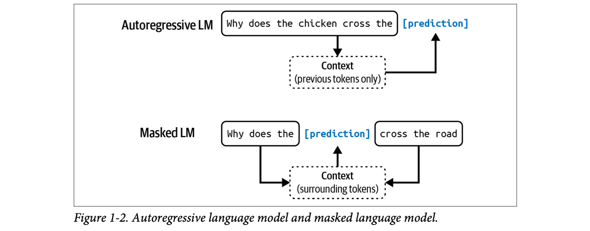
How to read this figure. Top: "Why does the chicken cross the" feeds a context box marked "previous tokens only", and the prediction slot sits at the end. Bottom: the prediction slot sits in the middle, and arrows come from both "Why does the" and "cross the road" into a context box marked "surrounding tokens". The only difference is which arrows are allowed.
From here on, unless stated otherwise, the book uses language model to mean an autoregressive one.
Sentence is our own; outlined tokens are the context the model may use, the filled token is the one being predicted.
A language model's output is open-ended: from a fixed, finite vocabulary it can build infinitely many outputs. A model that can produce open-ended outputs is called generative, which is where the name generative AI comes from.
Think of a language model as a completion machine: you give it text (a prompt) and it tries to finish it. Give it "To be or not to be" and it completes ", that is the question."
Completions are predictions based on probabilities, not guaranteed correct. This probabilistic nature is what makes language models both exciting and frustrating (Chapter 2 explores it).
Completion is surprisingly powerful because many tasks can be phrased as completion:
But completion is not conversation. Ask a pure completion machine a question and it might just add another question instead of answering. The book's "Post-Training" section (Chapter 2, printed p78) explains how models are taught to respond properly to requests.
# Illustrative: framing a task as a completion (our own example)
prompt = (
"Classify the support ticket as BILLING, BUG or OTHER.\n"
"Ticket: My card was charged twice this month.\n"
"Label:" # the model only has to complete one word
)
completion = model.complete(prompt) # e.g. " BILLING" (hypothetical client)The key line is the trailing "Label:": the prompt is shaped so that the most likely next tokens are the answer. model.complete stands for whichever completion API you use; it is not a specific library call.
Antakshari. Each singer must start a song from the last letter of the previous one: you only look back (autoregressive). A crossword is the masked version: you see letters on both sides of the blank. Where it breaks: in antakshari you pick the next song freely; a language model picks by probability, so it can "sing" something plausible but wrong.
Generation means making one token, appending it, and predicting again. A model that peeks at future tokens during training could not do that at inference time because the future doesn't exist yet. So generators are trained "causally" (left-to-right only), while masked models, free to see both sides, build richer understanding of a fixed text but can't naturally write new text.
"BERT vs GPT?" Say: "BERT is a masked, bidirectional encoder: it sees both sides of a gap, so it's great for classification and embeddings. GPT-style models are autoregressive: they predict the next token from the left only, which is what lets them generate. For a RAG system I might use an encoder-style model to embed documents and an autoregressive model to write the answer."
Language modeling is only one ML algorithm among many: object detection, topic modeling, recommender systems, weather forecasting, stock-price prediction and so on. So why did language models become the centre of the scaling race that led to the "ChatGPT moment"?
Answer: language models can be trained with self-supervision, while many other models need supervision.
Supervision means training on labelled data: you label examples of the behaviour you want, train on them, then apply the model to new data. Example: for fraud detection you collect transactions, each labelled "fraud" or "not fraud"; once trained, the model predicts whether a new transaction is fraud.
The 2010s AI successes ran on supervision. AlexNet (Krizhevsky et al., 2012), the model that kicked off the deep learning revolution, was supervised: it learned to classify over 1 million images of ImageNet into 1,000 categories such as "car", "balloon" or "monkey".
The drawback: labelling is expensive and slow.
Footnote 5: real labelling cost depends on task difficulty, scale (bigger datasets usually cost less per sample) and the vendor. As of September 2024, Amazon SageMaker Ground Truth charged 8 cents per image for fewer than 50,000 images but only 2 cents per image above 1 million images.
Defaults reproduce the book's $50,000 example. Changing the sliders gives modelled numbers. For self-supervised text, the label cost line is always $0.
In self-supervision the model infers labels from the input data itself; no human labelling. Language modeling is self-supervised because each sequence gives you both the labels (the tokens to predict) and the context used to predict them. The sentence "I love street food." gives six training samples:
| Input (context) | Output (next token) |
|---|---|
<BOS> | I |
<BOS>, I | love |
<BOS>, I, love | street |
<BOS>, I, love, street | food |
<BOS>, I, love, street, food | . |
<BOS>, I, love, street, food, . | <EOS> |
<BOS> and <EOS> mark the beginning and end of sequence. They let a model work with many sequences, and each is usually treated as one special token. The end marker matters most: it tells the model when to stop its response (footnote 6: just as humans need to know when to stop talking).
Splits on words and punctuation for readability; a real model would use its own tokens.
Self-supervised is not the same as unsupervised. In self-supervised learning, labels are inferred from the data. In unsupervised learning you don't need labels at all (for example, clustering).
Because no labelling is needed and text is everywhere (books, blog posts, articles, Reddit comments), you can build massive training sets, letting language models scale up into LLMs.
A school dictation exercise where the teacher covers the next word of a newspaper line and asks you to guess it. The newspaper is the answer key; no teacher had to write answers. Every newspaper in the country is free homework. Where it breaks: a student learns meaning from the world too; the model only sees text, so it learns whatever patterns (and mistakes) the text contains.
The expensive part of supervised learning is the human in the loop for each example. Self-supervision removes that human: a sentence of N tokens yields N+1 next-token examples automatically (with BOS/EOS). Cost then scales with compute and data collection, not with labelling hours, and that is what lets datasets grow to trillions of tokens.
"Why did language models, not image classifiers, become the scaling story?" Say: "Because next-token prediction is self-supervised: raw text supplies both inputs and labels, so data scales to the internet without labelling cost. Supervised tasks like ImageNet are capped by how many labels you can pay for, which grows linearly with examples and categories."
"LLM" is not a scientific term. How big must a model be to count as "large"? Today's large may be tomorrow's tiny.
Model size is usually measured in parameters: variables inside an ML model that are updated during training. In general (not always), more parameters means more capacity to learn the behaviours you want.
Footnote 7: Huyen was taught at school that parameters = weights + biases. Today people usually say model weights to mean all parameters.
| When | Model | Parameters | Considered… |
|---|---|---|---|
| June 2018 | OpenAI's first GPT (generative pre-trained transformer) | 117 million | large |
| February 2019 | GPT-2 | 1.5 billion | now 117M looks small |
| Time of writing | — | 100 billion | large (maybe small one day) |
Bar widths are log10(parameters) scaled so 100B fills the track (our drawing, the book's numbers).
A question usually taken for granted. Larger models have more capacity to learn, so they need more training data to reach their best performance. You can train a large model on a small dataset, but it wastes compute: a smaller model could reach similar or better results on that data.
Footnote 8: this feels backwards. If a model is more powerful, shouldn't it need fewer examples? The point is that we are not trying to make a big model match a small model on the same data; we are trying to maximise performance, and a bigger model only gets there with more data.
A big steel almirah vs a small one. The big almirah can hold much more, but if you only own five shirts, buying it just wastes money and space; the small one does the job. Capacity only pays off when you have the clothes (data) to fill it. Where it breaks: an empty almirah doesn't get worse; an over-sized model on little data can also overfit.
Each parameter is a knob tuned by training. More knobs can represent more patterns, but each knob needs evidence to be set well. With too little data, the extra knobs are either barely trained or memorise noise. Chapter 2's scaling-law discussion makes this precise (how many tokens per parameter).
"Is a 70B model always better than a 7B one?" Say: "More parameters means more capacity, not guaranteed quality. Quality depends on training data and post-training too, and a smaller model trained well can beat a bigger one. For production I weigh that against latency and cost: a smaller model is often good enough for narrow tasks."
Language models are powerful but limited to text. Humans perceive the world through sight, hearing, touch and more. To act in the real world, AI must handle data beyond text.
So language models are being extended to more data modalities (kinds of data). GPT-4V and Claude 3 understand images and text. Some models even understand video, 3D assets, protein structures and more. OpenAI's 2023 GPT-4V system card said that adding modalities such as images to LLMs is seen by some as "a key frontier" in AI research.
Many people still call Gemini and GPT-4V "LLMs", but a better name is foundation models. "Foundation" signals both how important they are to AI applications and that they can be built upon for different needs.
For a long time AI research was divided by modality:
A model that handles more than one modality is a multimodal model. A generative multimodal model is a large multimodal model (LMM). Where a language model predicts the next token from text tokens only, a multimodal model predicts the next token from text and image tokens (or whatever modalities it supports).
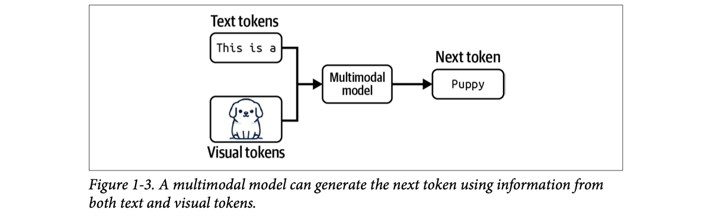
How to read this figure. Two inputs merge into one box: the text "This is a" and an image (visual tokens) of a puppy. The model outputs the next token "Puppy". It could not get "Puppy" from the text alone; the image supplies the missing information.
Multimodal models also need lots of data, and self-supervision works here too. OpenAI trained CLIP (2021) with a variant called natural language supervision: instead of labelling images by hand, they collected (image, text) pairs that already appeared together on the internet. That gave 400 million pairs, 400× bigger than ImageNet, with no manual labelling cost. CLIP became the first model that could generalise to many image classification tasks without extra training.
CLIP is not generative: it doesn't produce open-ended output. It is an embedding model, trained to produce joint embeddings of texts and images. For now, think of an embedding as a vector that tries to capture the meaning of the original data (Chapter 3, "Introduction to Embedding", printed p134, goes deeper). Multimodal embedding models like CLIP are the backbones of generative multimodal models such as Flamingo, LLaVA and Gemini (previously Bard).
In this book, foundation models means both large language models and large multimodal models.
Imagine CLIP-style vectors (modelled, 2-D for drawing). A photo of a dog and the caption "a dog on the beach" land close together; "a bowl of dal" lands far away. Pick a caption to see which image it matches best.
Coordinates and similarities are modelled to illustrate the idea; real CLIP vectors have hundreds of dimensions.
A newspaper archive where every photo already has a caption printed under it. You don't need to hire anyone to describe the photos: the captions are the labels. CLIP learned from 400 million such photo-caption pairs. Where it breaks: internet captions are noisy ("look at this!!") so the "labels" are weaker than careful human ones, which is the price of the scale.
A multimodal LMM turns an image into a sequence of "visual tokens" (vectors) that sit alongside text tokens in the same input. The decoder then does exactly what an LLM does: predict the next token. An embedding model like CLIP provides the bridge that puts images and text in one shared vector space.
"LLM vs foundation model vs LMM?" Say: "An LLM is a large text-only language model. An LMM is a generative model that also takes images or other modalities. 'Foundation model' covers both: big general models you build on. CLIP is a multimodal embedding model, not generative; it's often the image encoder inside LMMs." For a voice agent, STT and TTS used to be separate audio-only models; newer speech-native models fold them into one multimodal model.
Foundation models also mark the shift from task-specific to general-purpose models. Before, a model was built for one job: a sentiment model couldn't translate and a translation model couldn't judge sentiment.
Thanks to their scale and how they're trained, foundation models can do a wide range of tasks out of the box, fairly well. One LLM can do both sentiment analysis and translation. You can still tweak a general model to get the best performance on your specific task.
Figure 1-4 shows the task types in the Super-NaturalInstructions benchmark (Wang et al., 2022), a sense of what foundation models are tested on.
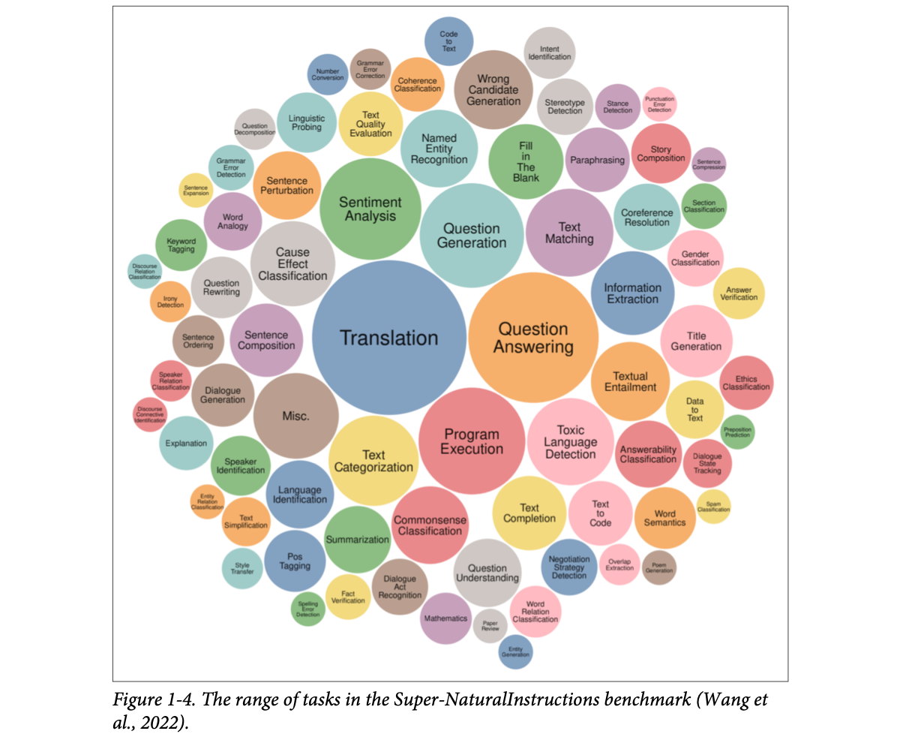
How to read this figure. Each bubble is a task type; bigger bubbles mean more tasks of that type in the benchmark. The biggest are Translation and Question Answering, then Program Execution, Question Generation, Sentiment Analysis, Text Categorization, Toxic Language Detection, Misc. Around them are dozens of small ones: summarization, fact verification, mathematics, text-to-code, spam classification, poem generation, irony detection and more. The point: one general model is expected to handle all of them.
You build an app that writes product descriptions for a retailer's website. An out-of-the-box model might write accurate descriptions but miss the brand's voice or messaging, or fill them with marketing clichés. Three common fixes:
These three are the most common AI engineering techniques for adapting a model; the rest of the book covers each in detail.
Brand "Kesar Kurta Co." and all sample outputs are invented to illustrate the idea.
Adapting a powerful existing model is usually much easier than building one: think ten examples and one weekend versus 1 million examples and six months. Foundation models make AI apps cheaper and faster to ship. How much data you need depends on the technique (each later chapter discusses this).
Task-specific models still have advantages: they can be much smaller, so faster and cheaper to run. Whether to build your own or use an existing one is the classic buy-or-build question; teams must decide for themselves, and the book's discussions help.
Hiring a smart graduate (foundation model) vs training a specialist from childhood (task-specific model). The graduate can do many jobs; to make them great at your job you give instructions (prompting), hand them the company files (RAG), or send them on a training course (finetuning). Where it breaks: a specialist trained from scratch may be cheaper to "employ" every day, the same way a small task model is cheaper per request.
Prompting and RAG change only the input; the model's weights stay fixed. Finetuning changes the weights. That's why prompting is fast to try and easy to swap between models, while finetuning costs more effort but can change behaviour more deeply (plate 31).
"How would you make an LLM write in a brand's voice?" Say: "Start with prompt engineering and a few examples, because it's cheapest and lets me compare models. If the model lacks facts, add RAG over the product catalogue and reviews. Only if that plateaus or cost/latency is too high would I finetune on curated descriptions, possibly a smaller model."
AI engineering is the process of building applications on top of foundation models. People have built AI applications for over a decade under the name ML engineering or MLOps (ML operations). So why a new name now?
The key difference: traditional ML engineering develops models; AI engineering uses existing ones. Powerful, easy-to-reach foundation models create three factors that together make ideal conditions for AI engineering to grow fast:
Foundation models are powerful not only because they do old tasks better, but because they can do more tasks. Apps once thought impossible are now possible; apps nobody imagined are appearing; things impossible today may be possible tomorrow. This makes AI useful in more parts of life, which grows both the user base and the demand for AI apps.
Examples from the book:
The smartphone. It didn't just make phone calls better; it swallowed the camera, the map, the torch, the UPI wallet and the train ticket counter. More things it could do meant more people needed one. Where it breaks: a phone's apps are each hand-written; a foundation model does new tasks with no new code, just a new prompt.
When one model covers many tasks, the cost of trying a new idea drops to "write a prompt". Ideas that would never justify a dedicated ML project (too small, too odd) become worth trying, so the number of applications explodes.
ChatGPT's success triggered a sharp rise in AI investment from both venture capitalists and enterprises. As AI apps get cheaper to build and faster to launch, the return on investment looks better, so companies rush to put AI into products and processes.
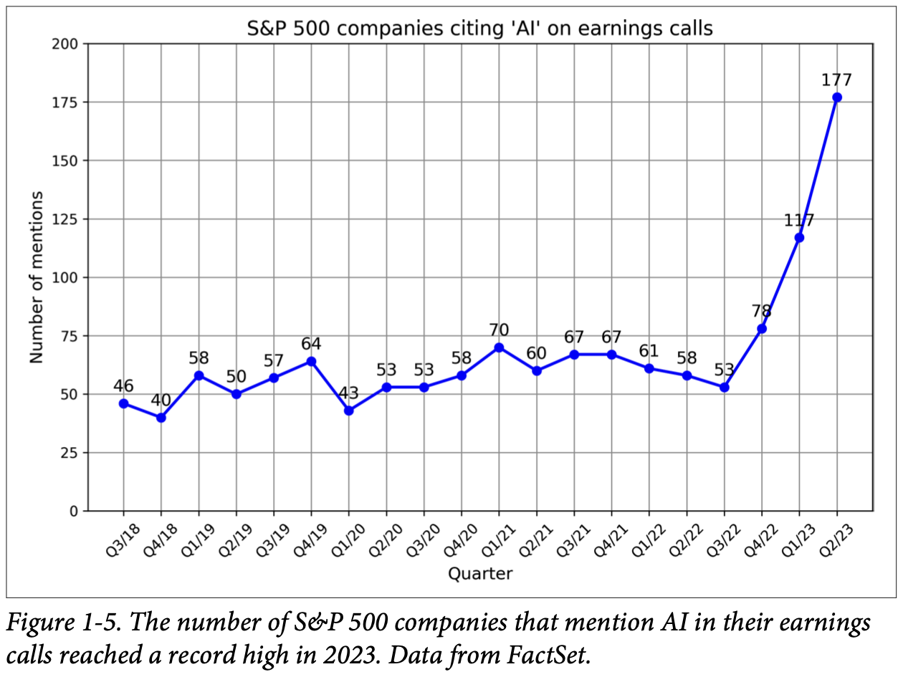
How to read this figure. The y-axis is the number of S&P 500 companies citing "AI" on earnings calls (0 to 200); the x-axis runs quarter by quarter from Q3 2018 to Q2 2023, and every dot is labelled with its value. For four years the line wobbles between 40 (Q4 2018) and 70 (Q1 2021). Then, after ChatGPT's launch (late 2022), it shoots up: 53 → 78 → 117 → 177 in Q2 2023, the record high.
According to WallStreetZen, companies that mentioned AI on earnings calls saw their stock rise more than those that didn't: 4.6% on average vs 2.4%. It's unclear whether that is causation (AI makes companies more successful) or correlation (successful companies are simply quick to adopt new tech).
When UPI took off, every shop suddenly had a QR code at the counter and every company's annual report mentioned "digital payments". Mentions rose far faster than actual use. Where it breaks: UPI's benefit was easy to measure; AI's business value is still being worked out, which is exactly why the book separates hype from planning (plate 23).
A 100× drop in cost for the same task changes the maths of every project proposal. Things that were "too expensive per user" become cheap, so more projects clear the ROI bar, money flows in, and that money funds more tools, which lowers costs again: a feedback loop.
"Mention AI, stock goes up: does AI cause success?" A good answer separates correlation from causation: "That 4.6% vs 2.4% gap could be because fast-adopting companies were already stronger. To claim causation you'd need a controlled comparison." Interviewers like this kind of care with metrics.
The model as a service approach, popularised by OpenAI and other providers, exposes models via APIs that take user queries and return model outputs. Without such APIs you'd need your own infrastructure to host and serve a model. With them, a powerful model is one API call away.
AI also lets you build with very little code:
# Illustrative: "model as a service" = one HTTP call (shape is typical, not one vendor's exact API)
POST https://api.provider.example/v1/chat
{ "model": "some-foundation-model",
"messages": [{"role": "user", "content": "Summarise this ticket in one line: ..."}] }
# → {"output": "Customer was double-charged in March and wants a refund."}The point is what's missing: no GPU servers, no model weights, no serving stack on your side. The provider runs all of that.
Because building foundation models takes so many resources, only big corporations (Google, Meta, Microsoft, Baidu, Tencent), governments (Japan, the UAE) and well-funded startups (OpenAI, Anthropic, Mistral) can do it. In a September 2022 interview, OpenAI CEO Sam Altman said the biggest opportunity for most people will be adapting these models to specific applications.
The world grabbed that opportunity. AI engineering became one of the fastest, quite possibly the fastest-growing engineering discipline, and its tools are gaining traction faster than any earlier software tools. In just two years, four open-source AI engineering tools (AutoGPT, Stable Diffusion web UI, LangChain, Ollama) earned more GitHub stars than Bitcoin, and are on track to pass even React and Vue.
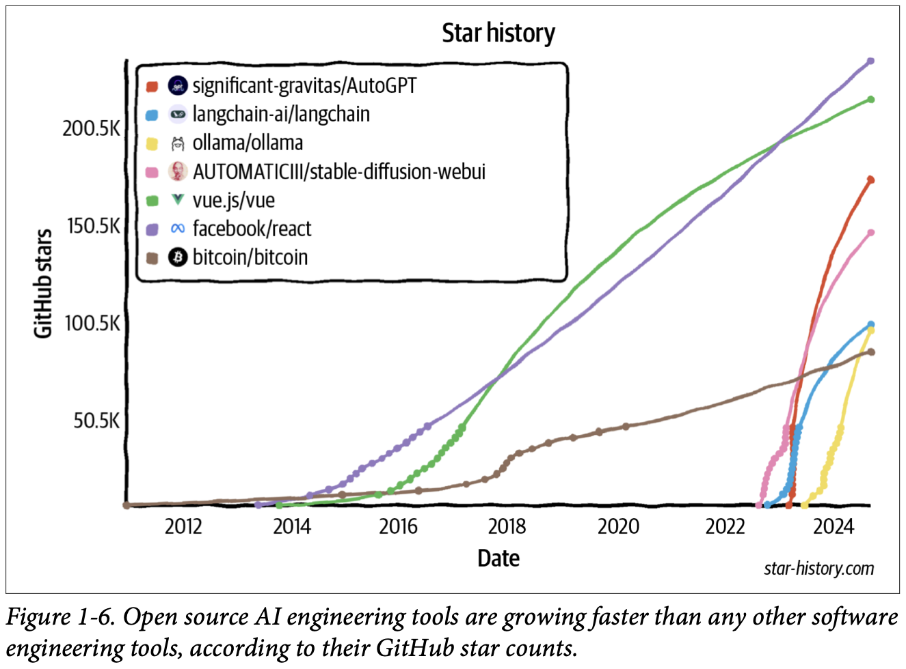
How to read this figure. It is a star-history chart from star-history.com: GitHub stars (0 to about 235K) against date (2012–2024). React (purple) and Vue (green) climb steadily from about 2014 to roughly 235K and 215K by 2024, taking about ten years. Bitcoin (brown) creeps up slowly to around 85K. Then, starting in late 2022 and 2023, four near-vertical lines shoot up: AutoGPT (red) to about 170K, Stable Diffusion web UI (pink) to about 145K, LangChain (blue) and Ollama (yellow) to around 95–100K, all within about two years. The steepness is the message.
Before cloud kitchens, opening a restaurant meant renting a space and hiring chefs. With Swiggy/Zomato and shared kitchens, anyone with a good recipe can sell food from day one. Model APIs are the shared kitchen. Where it breaks: if everyone uses the same kitchen and the same recipe book, standing out gets harder (see defensibility, plate 25).
APIs turn a capital cost (GPUs, ML team, serving) into a per-request operating cost. Natural-language interfaces turn a programming skill into a writing skill. Each removes a gate, and together they widen who can build.
"Hosted API or self-hosted open model?" Say: "APIs give the strongest models with zero infra and fast start. Self-hosting gives control over data, cost at high volume and latency tuning, but needs serving and GPU skills. I'd start with an API behind a gateway that abstracts the provider, then move heavy, stable workloads to self-hosted models if cost or privacy demands it."
Many names are used for building on top of foundation models: ML engineering, MLOps, AIOps, LLMOps and so on. Huyen explains her choice:
The fast-growing community of AI engineers has shown huge creativity, and the next section explores the most common application patterns.
"Civil engineer" vs "construction operations": one designs and adapts structures, the other keeps sites running. Huyen picks the word that describes the core activity (engineering the model's behaviour) rather than the support work. Where it breaks: in real teams, the operations side (serving, monitoring) is a large share of the work too.
If asked "MLOps vs LLMOps vs AI engineering?": "MLOps is operating the ML lifecycle: training, deploying and monitoring your own models. AI engineering is building products on foundation models: the focus moves to prompts, context, evaluation and interfaces, though serving and monitoring still matter. LLMOps is often used for the ops part of that."
If you already have an app in mind, the book suggests jumping to "Planning AI Applications" (plate 23). If you want inspiration, this section covers proven and promising use cases.
The list of possible apps seems endless; whatever you think of, there's probably "an AI for that". Footnote 10: as of 16 September 2024, the website theresanaiforthat.com listed 16,814 AIs for 14,688 tasks and 4,803 jobs.
Even categorising use cases is hard, because surveys disagree:
| Who | How they bucket use cases |
|---|---|
| AWS (Amazon Web Services) | 3 enterprise buckets: customer experience, employee productivity, process optimization |
| O'Reilly 2024 survey | 8 categories: programming, data analysis, customer support, marketing copy, other copy, research, web design, art |
| Deloitte | By value captured: cost reduction, process efficiency, growth, accelerating innovation |
| Gartner | Adds business continuity: the company might go out of business if it doesn't adopt generative AI. Of 2,500 executives surveyed in 2023, 7% cited this as their reason. |
Eloundou et al. (2023) studied how exposed occupations are to AI. A task is exposed if AI or AI-powered software can cut the time to do it by at least 50%. An occupation with 80% exposure has 80% of its tasks exposed. Occupations at or near 100% include interpreters and translators, tax preparers, web designers and writers. Occupations with no exposure include cooks, stonemasons and athletes. The study gives a good sense of what AI is good for.
| Group | Occupation | % exposure |
|---|---|---|
| Human α | Interpreters and translators | 76.5 |
| Survey researchers | 75.0 | |
| Poets, lyricists, and creative writers | 68.8 | |
| Animal scientists | 66.7 | |
| Public relations specialists | 66.7 | |
| Human β | Survey researchers | 84.4 |
| Writers and authors | 82.5 | |
| Interpreters and translators | 82.4 | |
| Public relations specialists | 80.6 | |
| Animal scientists | 77.8 | |
| Human ζ | Mathematicians | 100.0 |
| Tax preparers | 100.0 | |
| Financial quantitative analysts | 100.0 | |
| Writers and authors | 100.0 | |
| Web and digital interface designers | 100.0 | |
| Humans labelled 15 occupations as "fully exposed". | ||
Reading tip: the same job scores higher in β/ζ than in α because AI-powered software (tools built around a model) can speed up more tasks than a bare model.
Exposure is "how many of your daily chores could a helper halve?" A translator's whole day is text in, text out: very exposed. A cook's day is hands, fire and taste: zero exposure. Where it breaks: "exposed" means time can be cut, not that the job disappears.
"How would you pick where to apply LLMs in a company?" Use the exposure idea: "Look for tasks that are text- or data-heavy, repetitive, and where a 50% time cut is plausible: support replies, document processing, summaries. Avoid tasks that are physical or need hard real-time guarantees first."
Huyen studied both enterprise and consumer apps. For enterprise, she interviewed 50 companies about their AI strategies and read 100+ case studies. For consumer, she examined 205 open-source AI apps with at least 500 GitHub stars (footnote 11: exploring AI apps is one of her favourite parts of writing the book; she keeps a public list of open-source AI apps, updated every 12 hours). She sorted them into eight groups. Treat the list as a reference; after Chapters 2 and 3 you'll better judge what foundation models can and should do.
| Category | Consumer examples | Enterprise examples |
|---|---|---|
| Coding | Coding | Coding |
| Image and video production | Photo and video editing; Design | Presentation; Ad generation |
| Writing | Email; Social media and blog posts | Copywriting, SEO (search engine optimization); Reports, memos, design docs |
| Education | Tutoring; Essay grading | Employee onboarding; Employee upskill training |
| Conversational bots | General chatbot; AI companion | Customer support; Product copilots |
| Information aggregation | Summarization; Talk-to-your-docs | Summarization; Market research |
| Data organization | Image search; Memex | Knowledge management; Document processing |
| Workflow automation | Travel planning; Event planning | Data extraction, entry, and annotation; Lead generation |
Because foundation models are general, one app can sit in several categories: a bot can be a companion and aggregate information; an app can extract structured data from a PDF and answer questions about it.
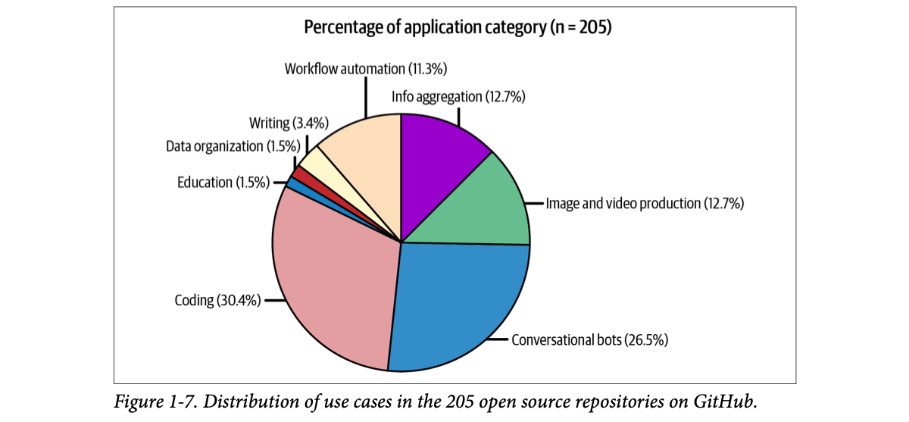
How to read this figure. Two slices dominate: coding 30.4% and conversational bots 26.5%, together over half. Then info aggregation 12.7%, image and video production 12.7%, workflow automation 11.3%. Tiny slices: writing 3.4%, data organization 1.5%, education 1.5%. Huyen warns that small slices don't mean unpopular, only that those apps are rarely open source; their builders may find them a better fit for enterprise products.
A 2024 a16z Growth report showed companies deploy internal-facing apps (like internal knowledge management) faster than external-facing ones (like customer support chatbots). Internal apps let a company build AI engineering skill while limiting risks around data privacy, compliance and possible catastrophic failures.
Similarly, although foundation models are open-ended, many apps built on them are still close-ended, such as classification. Close-ended tasks are easier to evaluate, so their risks are easier to estimate.
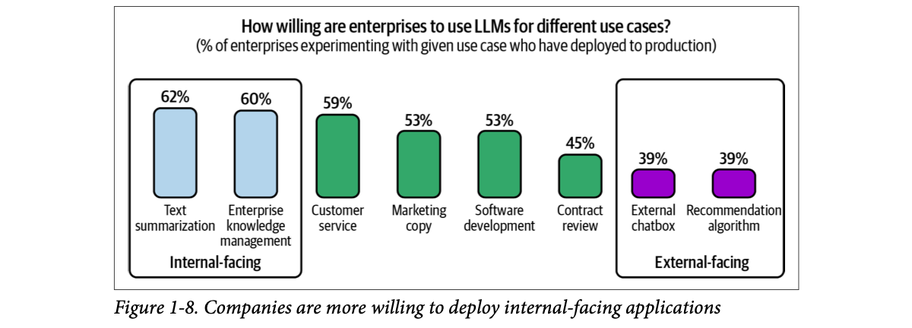
How to read this figure. Each bar is "of the enterprises experimenting with this use case, what % shipped it to production". Left box (internal-facing): text summarization 62%, enterprise knowledge management 60%. Middle: customer service 59%, marketing copy 53%, software development 53%, contract review 45%. Right box (external-facing): external chatbot 39%, recommendation algorithm 39%. The bars fall as the audience moves from employees to customers.
Even after seeing hundreds of AI apps, Huyen still finds surprising new ones every week. In the early internet, few predicted social media would become the dominant use; the use case that ends up dominating AI might surprise us too (hopefully pleasantly).
A new cook in a dhaba first makes staff meals. Mistakes there cost little and he learns the kitchen. Only after that does he cook for paying customers. Internal tools are the staff meal. Where it breaks: internal users may forgive errors too easily, so an internal success can hide problems that customers would notice.
Risk = probability of failure × cost of failure. Internal apps lower the cost (employees, not customers, see errors; less legal exposure). Close-ended tasks lower uncertainty about the probability (you can measure accuracy against labels). Both make the risk easy to bound, which is what enterprise approvals need.
"Where would you deploy your first LLM feature?" Say: "Internal first, like summarising support tickets for agents, and preferably a close-ended task like routing or classification, because I can measure accuracy and errors stay inside the company. Then move to customer-facing with guardrails once metrics are stable."
Across many generative AI surveys, coding is clearly the most popular use case. Two reasons: AI is good at coding, and early AI engineers are coders who feel coding pain first-hand.
Besides general coding help, many tools specialise:
| Task | Example tools named |
|---|---|
| Extract structured data from web pages and PDFs | AgentGPT |
| English → code | DB-GPT, SQL Chat, PandasAI |
| Design or screenshot → code for a website that looks like it | screenshot-to-code, draw-a-ui |
| Translate between languages or frameworks | GPT-Migrate, AI Code Translator |
| Write documentation | Autodoc |
| Create tests | PentestGPT |
| Generate commit messages | AI Commits |
Opinions span a spectrum. At one end, Jensen Huang (CEO of NVIDIA) predicts AI will replace human software engineers and that we should stop telling kids to learn to code. In a leaked recording, AWS CEO Matt Garman said most developers will soon stop coding, meaning their jobs will change, not that developers end. At the other end, many engineers are sure they'll never be replaced, for technical and emotional reasons (people don't like admitting they're replaceable).
Software engineering is many tasks, and AI is better at some. McKinsey found AI made developers about twice as productive for documentation and 25–50% more productive for code generation and refactoring, with minimal gains on highly complex tasks. Developers of AI coding tools also told Huyen that AI is much better at frontend than backend development.
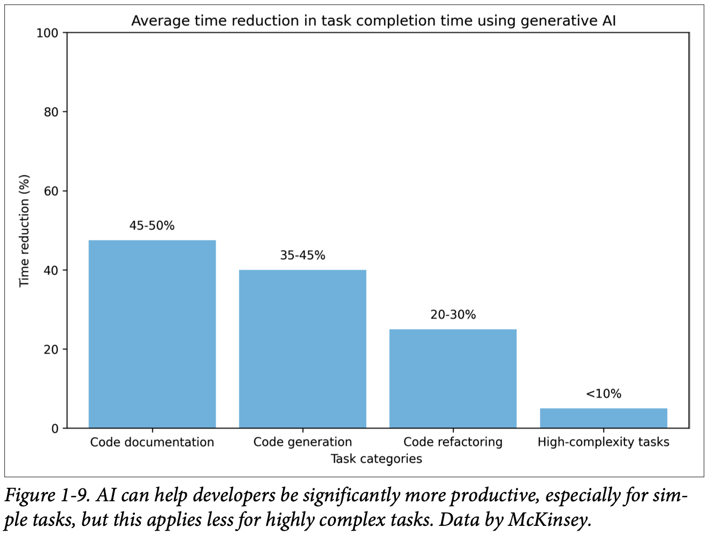
How to read this figure. The y-axis is the average reduction in task time using generative AI. Code documentation: 45–50%. Code generation: 35–45%. Code refactoring: 20–30%. High-complexity tasks: under 10%. The staircase going down left to right is the message: the harder the task, the less AI helps. (A 50% time cut is the same as being "twice as productive".)
Bars use the midpoint of each McKinsey range (<10% shown as 5%). The sprint numbers are modelled from those midpoints.
Whether or not AI replaces engineers, it clearly makes them more productive, so companies can do more with fewer engineers. AI may also disrupt outsourcing, because outsourced work tends to be simpler tasks outside a company's core business.
A power drill for a carpenter. It makes drilling holes (documentation, boilerplate) far faster, but it doesn't design the cupboard or know where the wall's wiring runs (complex system design). Where it breaks: a drill never drills in the wrong place on its own; AI code can be confidently wrong, so review still matters.
Simple coding tasks look a lot like code the model saw in training, and their correctness is local (one function). Complex tasks need knowledge of a specific codebase, long-range reasoning and hidden constraints that aren't in the prompt. Frontend code is also very visible and plentiful online, which may explain why tool builders see AI do better there than on backend work.
"How do you use AI coding tools as a backend engineer?" Say: "For docs, tests, boilerplate and refactors I get big speedups; for distributed-systems design, concurrency and production debugging the gain is small, so I treat AI output as a draft and review it carefully. That matches McKinsey's data: roughly 2× on documentation, under 10% on high-complexity work."
Because AI is probabilistic (it doesn't always give the same answer), it is great for creative work. Some of the most successful AI startups are creative: Midjourney (image generation), Adobe Firefly (photo editing), and Runway, Pika Labs and Sora (video generation).
For enterprises, ads and marketing adopted AI quickly. Footnote 12: companies spend heavily on marketing, about 11% of budget on average (Christine Moorman, WSJ, 2017), so automation there saves a lot. AI can:
A sweet shop wants a Diwali, a monsoon and a winter version of one banner, for three cities. That's 3 seasons × 3 cities = 9 variants. A designer at, say, 2 hours each spends 18 hours; with AI drafts plus 20 minutes of human touch-up each, about 3 hours. The A/B test can then show all 9 and keep the winners.
Hours are modelled, not from the book.
A rangoli artist who never draws the same pattern twice. For decoration, variety is a feature. Where it breaks: for a bank statement, "never the same twice" is a disaster; the same randomness that helps creativity hurts tasks that need one correct answer.
Generative models sample from a probability distribution. In creative work there are many acceptable outputs, so sampling gives useful variety; in factual work there's one right output, so sampling becomes a source of error (Chapter 2 covers sampling).
AI has helped with writing for a long time: smartphone autocorrect and auto-completion are AI. Writing suits AI because we do it a lot, it's often tedious, and we have a high tolerance for mistakes: if a suggestion is bad, you just ignore it. And since LLMs are trained for text completion, it's no surprise they write well.
453 college-educated professionals got job-specific writing tasks; half were randomly given ChatGPT.
ChatGPT narrowed the quality gap between workers, so it helped those less inclined to write the most. Exposed workers were 2× as likely to report using it in their real job two weeks later, and 1.6× as likely two months after that.
Bars: time bar shows 60% of the original time; quality bar is a marker for the +18% gain (our drawing, book's numbers).
In 2023 the New York Times reported Amazon flooded with poor AI-generated travel guidebooks, each with an AI-made author bio, website and glowing reviews.
A typing clerk outside the district court who drafts your affidavit from your rough story. You read it, fix a line, sign. A wrong word costs little because you check it. Where it breaks: the clerk can't flood a thousand courts with fake affidavits overnight; AI content farms can, which is the abuse side.
Writing has a human reviewer built in (the author), so AI's error rate is filtered before it matters. That's why writing became an early win, and why fully automated writing at scale (content farms) is where quality collapses: no human filter.
"Which AI features are lowest-risk to ship?" Say: "Ones with a human in the loop by design and a high tolerance for errors, like writing suggestions the user can ignore. The MIT study shows big gains (−40% time, +18% quality) precisely in that setup."
When ChatGPT goes down, OpenAI's Discord fills with students who can't finish homework. Education boards including New York City Public Schools and the Los Angeles Unified School District quickly banned ChatGPT over cheating fears, then reversed the bans a few months later.
Instead of banning AI, schools could use it to help students learn faster:
Pajak and Bicknell (Duolingo, 2022) found that of the four stages of course creation, lesson personalization benefits most from AI.
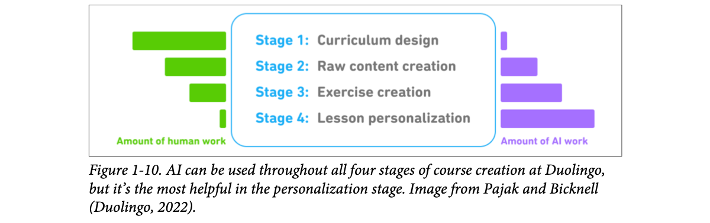
How to read this figure. The four stages run top to bottom: 1 curriculum design, 2 raw content creation, 3 exercise creation, 4 lesson personalization. Green bars on the left are human work; purple bars on the right are AI work. As you go down, the green bar shrinks and the purple bar grows: curriculum design is almost all human, personalization is almost all AI.
Some education companies lose out: Chegg, a homework-help company, saw its share price fall from $28 when ChatGPT launched (November 2022) to $2 in September 2024 as students turned to AI.
The flip side: if AI threatens many skills, it can also be a tutor for any skill, getting someone up to speed fast so they can keep learning and eventually beat the AI.
A home tuition teacher who knows exactly which chapter you're weak in and makes a fresh worksheet each evening just for that. Most families can't afford one per child; AI can be one for everyone. Where it breaks: a good tuition teacher notices you're tired or upset; today's AI mostly sees only what you type.
Curriculum design needs expert judgement about what matters (hard to automate). Personalization is "rewrite the same content many ways for many learners", which is cheap for a generator and too expensive for humans to do at scale. That's why AI's share grows down the Duolingo stages.
Conversational bots are versatile: they find information, explain ideas, brainstorm, act as companion or therapist, and can imitate personalities so you can talk to a digital copy of anyone you like. Digital girlfriends and boyfriends became popular remarkably fast; many people already spend more time talking to bots than to humans, and some worry AI will ruin dating.
In research, groups of bots can simulate a society to study social dynamics (Park et al., 2023).
For enterprises, the most popular bots are customer support bots: they cut costs and improve experience because they reply faster than human agents. AI can also be a product copilot guiding customers through painful tasks such as filing insurance claims, doing taxes or looking up company policies.
An IRCTC help desk that never closes, speaks every language and answers in one second. For "what's my PNR status?" it beats a queue; for "my mother missed the train and is stranded", you still want a person. Where it breaks: the bot sounds equally confident in both cases, so you must design when to hand off.
A bot is a foundation model plus a conversation loop, memory of past turns, and often tools and retrieval. Voice adds speech-to-text, text-to-speech and strict latency budgets (people notice pauses), which is one reason voice lags chat.
"Why is a voice agent harder than a chatbot?" Say: "Latency: people expect replies within a few hundred milliseconds, so time-to-first-token and streaming TTS matter a lot. Turn-taking and interruptions. STT errors feed into the LLM. And compliance: voice is often customer-facing." This is directly your realtime voice work.
Success often depends on filtering and digesting useful information, but emails, Slack and news can overwhelm. AI is good at aggregating and summarising. Salesforce's 2023 Generative AI Snapshot Research: 74% of generative AI users use it to distill complex ideas and summarise information.
The more information you gather, the more you need to organise it, so aggregation goes hand in hand with data organisation (next plate).
You will receive a thread of messages.
Return three sections:
FACTS: things that were stated as true
OPEN QUESTIONS: things still undecided
ACTION ITEMS: "owner – task – due date" per line
Thread:
{thread_text}Sample thread (invented): "Ravi: staging is down since 3pm. Meera: I think it's the cert. Ravi: who renews it? Meera: I'll do it by tomorrow."
The template's three headings follow the book's description; the wording and the output are ours.
The office peon who reads all circulars and tells you the three that matter to you. Where it breaks: if he misreads one, you never see the original, so summaries need a way back to the source (citations).
"How would you build talk-to-your-docs?" Say: "Chunk and embed documents, retrieve the top chunks for the question, and have the LLM answer only from them with citations. Evaluate retrieval separately from generation." This is the RAG-memory pattern from your own work.
We'll keep producing more data: phone photos and videos, company logs about products, staff and customers, billions of contracts a year. Photos, videos, logs and PDFs are unstructured or semistructured data, and they need organising so they can be searched later.
{ "merchant": "Sharma Sweets",
"city": "Jaipur",
"items": [
{"name": "Kaju Katli 250g", "qty": 2, "amount": 560},
{"name": "Samosa (6)", "qty": 1, "amount": 90}],
"tax": 32.50, "total": 682.50 }Invented receipt. In a real pipeline you'd validate the JSON against a schema and check that items + tax = total.
A shoebox of 40,000 unsorted family photos vs an album where every photo is labelled "Goa trip 2019, beach, Dadi". AI writes the labels for you. Where it breaks: a label it gets wrong is a photo you'll never find, and you won't know it's missing.
Search needs structure: either text you can index or vectors you can compare. Multimodal models produce both (captions and embeddings), turning piles of pixels and PDFs into rows and vectors that ordinary databases and search engines handle.
"How would you make LLM extraction reliable?" Say: "Ask for a strict JSON schema, validate it, add business-rule checks (totals add up), retry or escalate to a human on failure, and track field-level accuracy on a labelled sample."
Ultimately AI should automate as much as possible.
Many tasks need external tools. To book a restaurant, an app may need permission to search the web for the number, use your phone to call, and add the booking to your calendar. AIs that can plan and use tools are called agents. Interest in agents "borders on obsession", Huyen says, but it's not unjustified: agents could make everyone far more productive and create much more economic value. Agents are central to Chapter 6.
Not every app should be built, though, which is the next section.
A personal assistant who doesn't just tell you "the restaurant's number is X" but actually calls, books, and puts it in your diary. Where it breaks: a human assistant asks before spending your money; an agent must be designed to do that, because tool calls have real side effects.
An agent is a loop: the model decides the next action, calls a tool (search, phone, calendar), reads the result, and repeats until done. Each tool call is a chance for error, so long chains compound mistakes; that's why permissions and checks matter.
"What's an agent?" Say: "A model that plans and takes actions through tools in a loop, observing results, until a goal is met. The hard parts are reliable tool calling, error recovery, and guarding side effects with confirmations and permissions." Ties straight to tool-calling agents you've built.
With AI's apparent limitless potential, it's tempting to jump straight in. If you're learning for fun, do: building is one of the best ways to learn, and in the early days several heads of AI encouraged their teams to experiment to upskill. But if this is your living, step back and ask why and how. A cool demo is easy; a profitable product is hard.
Like many business decisions, building an AI app is usually a response to risks and opportunities:
Scenarios invented; the reasoning follows the book's three levels.
Once you have a good reason, ask whether you must build it. If AI is an existential threat, you may want it in-house rather than outsourcing it to a competitor. If you're using AI to boost profit and productivity, there may be plenty of buy options that save time and money and perform better.
A family-run travel agency. If online booking apps are eating your business (level 1), you must build your own digital presence now. If WhatsApp templates could save staff time (level 2), just buy a tool. If you're merely curious (level 3), let one nephew experiment on weekends. Where it breaks: real businesses are rarely at just one level, and the level can change in a year.
The level of risk sets the priority and the ownership. Existential threats justify owning the capability (it's your core); productivity gains are commodities you can buy; exploration is an option you pay a little for in case it becomes big.
"How do you decide whether to build an AI feature?" Say: "Start with the business reason: is it existential, a productivity gain, or exploration? That sets priority and build-vs-buy. Then define success metrics and a usefulness threshold before building, and check what off-the-shelf models already achieve."
What role AI plays in your product shapes how you build it and what it requires. Apple has a good document on the ways AI can be used in a product; three points matter here:
| Axis | Meaning | Example | Consequence |
|---|---|---|---|
| Critical vs complementary | If the app still works without AI, AI is complementary. | Face ID can't work without AI face recognition (critical). Gmail still works without Smart Compose (complementary). | The more critical AI is, the more accurate and reliable it must be. People forgive mistakes when AI isn't core. |
| Reactive vs proactive | Reactive answers a user request or action; proactive shows up when there's an opportunity. | A chatbot is reactive. Google Maps traffic alerts are proactive. | Reactive features usually (not always) must be fast. Proactive ones can be precomputed, so latency matters less, but since users didn't ask, low quality feels intrusive: proactive features need a higher quality bar. |
| Dynamic vs static | Dynamic features update continually with user feedback; static ones update periodically. | Face ID must update as faces change. Google Photos object detection probably updates only when the app is upgraded. | Dynamic AI may mean one model per user, continually finetuned, or other personalization like ChatGPT's memory feature. Static may mean one shared model for a group, updated only when that model is. |
Features and verdicts are our own examples applying the book's three axes.
Will AI support humans in the background, decide directly, or both? For a support chatbot, AI replies could be used in different ways:
Involving humans in AI's decisions is called human-in-the-loop. Microsoft (2023) proposed a framework for gradually increasing automation, called Crawl-Walk-Run:
The role of humans can change as the AI improves. At first, while you're still evaluating, AI might only suggest replies to human agents. If acceptance is high, for example 95% of AI-suggested replies to simple requests are used by agents word for word, you can let customers talk to the AI directly for those simple requests.
Learning to drive in India: first the instructor's car with dual brakes (crawl: human must approve everything), then driving in the colony with family (walk: internal users only), then the highway alone (run: external users). Where it breaks: a learner improves on their own; an AI system improves only when you measure, collect feedback and update it.
Each step widens the blast radius of a mistake (one employee → all employees → all customers). Moving up is justified by evidence such as the acceptance rate of AI suggestions, which doubles as free labelled data: every accepted or edited suggestion tells you how good the model is.
"How would you roll out an LLM support agent safely?" Say: "Crawl-Walk-Run. Start as a copilot that drafts replies for human agents and log acceptance rates. When simple intents reach something like 95% verbatim acceptance, automate those for customers while routing complex ones to humans. Proactive features get a higher quality bar than reactive ones."
If you sell AI apps as standalone products, think about defensibility. The low barrier is a blessing and a curse: what's easy for you is easy for competitors. What moats do you have?
Building on foundation models means providing a layer on top of them (footnote 20: an early running joke was that AI startups are just "OpenAI or Claude wrappers"). If the underlying models gain capabilities, your layer may be absorbed by the model, making your app obsolete. Example: you build a PDF-parsing app on ChatGPT assuming ChatGPT can't parse PDFs well or at scale. If that stops being true, you lose your edge. Even then, a PDF parser might still make sense on open-source models, aimed at users who want to host models in-house.
A general partner at a major VC firm told Huyen she's seen many startups whose entire product could be a feature of Google Docs or Microsoft Office. If they take off, what stops Google or Microsoft from assigning three engineers to copy them in two weeks?
Many successful companies began as something that "could have been a feature": Calendly (of Google Calendar), Mailchimp (of Gmail), Photoroom (of Google Photos; footnote 22: Huyen is an investor in Photoroom). Many startups overtake bigger rivals by building a feature those rivals overlooked; yours could be next.
A paan shop next to a big mall. The mall could easily open its own paan counter (it has distribution). The paan shop survives because it knows every regular's exact order (data) and got there first. Where it breaks: if the mall's counter is good enough and right at the entrance, distribution can still win.
Models are rented by everyone, so they can't be your edge. What compounds over time is proprietary data and the feedback loop that turns usage into a better product, which attracts more usage. That loop is the flywheel; distribution is the head start that feeds it.
"Isn't your product just a GPT wrapper?" Say: "The model is a commodity layer. Our edge is the workflow integration, proprietary data from usage, evaluation sets built from real conversations, and the feedback loop that keeps improving quality. Those are hard to copy even if a competitor uses the same model."
Once you've decided to build, define what success looks like and how you'll measure it. The most important metric is business impact. For a customer support chatbot:
Answering more messages doesn't mean happier users, so also track customer satisfaction and feedback in general ("User Feedback", Chapter 10, printed p474).
So you don't ship before it's ready, set a clear usefulness threshold: how good it must be to be useful. Threshold metrics can include:
If you don't know which metrics yet, don't worry; the rest of the book covers many.
Total ≈ TTFT + TPOT × (tokens − 1). The targets per use case (1 h, 5 s, 1 s for the first audio) are modelled assumptions, not the book's numbers; the "humans take an hour" example is the book's.
A dabbawala's promise isn't "we deliver lots of tiffins" but "your lunch arrives hot, on time, at your desk". Count, speed, cost and satisfaction all matter. Where it breaks: dabbawalas' quality is binary (arrived or not); an AI reply's quality is a spectrum you must define.
TTFT is mostly prompt processing (prefill) plus queueing; TPOT is the per-token decoding speed. Users feel TTFT as "is it thinking?" and TPOT as "how fast does it type?" Streaming makes TTFT the key number for chat and voice; total latency matters more for batch jobs.
"What latency metrics would you track for an LLM endpoint?" Say: "TTFT, TPOT and end-to-end latency, at p50 and p99, plus cost per request. For a voice agent, TTFT dominates perceived responsiveness, so I'd optimise prompt length, caching and streaming; for batch summarisation I'd care about throughput and total cost."
With measurable goals set, you need a plan, and it depends on where you start. Evaluate existing models first: the stronger the off-the-shelf model, the less work you have. If you want to automate 60% of support tickets and the model already automates 30%, you have less to do than if it automates none.
Goals often change after evaluation. You might find the resources to reach the usefulness threshold exceed the potential return, and drop the project.
Early success with foundation models can mislead. Base capabilities are already impressive, so a fun demo is quick, but a good demo doesn't promise a good product. A demo might take a weekend; a product, months or years.
The two marked points (80% at 1 month, 95% at 5 months) are from the book. The curve between them is a modelled exponential approach to 100%.
Building a house: the walls and roof go up in weeks, and it looks almost done. Then plumbing, wiring, tiling and fixing every leak take months. Where it breaks: a house is "done" at some point; an AI product keeps meeting new edge cases as users find them.
The first 80% covers common cases, which the model already handles. The remaining cases are rare, varied and often need new data, guardrails or product changes, each fixing a small slice. Effort per percentage point climbs steeply, which is why early demos give a false sense of progress.
"Your demo works. How long to production?" Say: "Demos hit the easy 80%. LinkedIn took one month to reach 80% and four more to pass 95%, mostly on hallucinations and edge cases. I'd first build an evaluation set from real traffic, measure the baseline, and plan most of the time for the long tail."
Planning doesn't end at reaching goals; think about how the product will change and be maintained. AI adds the challenge of its fast pace of change: the field moved incredibly fast for a decade and will likely keep doing so. Building on foundation models today means committing to ride this bullet train.
Model limitations are being fixed. Context lengths are getting longer, outputs better. Inference, computing an output for an input, is getting faster and cheaper. Figure 1-11 shows inference cost vs performance on MMLU (Massive Multitask Language Understanding; Hendrycks et al., 2020), a popular benchmark, from 2022 to 2024.
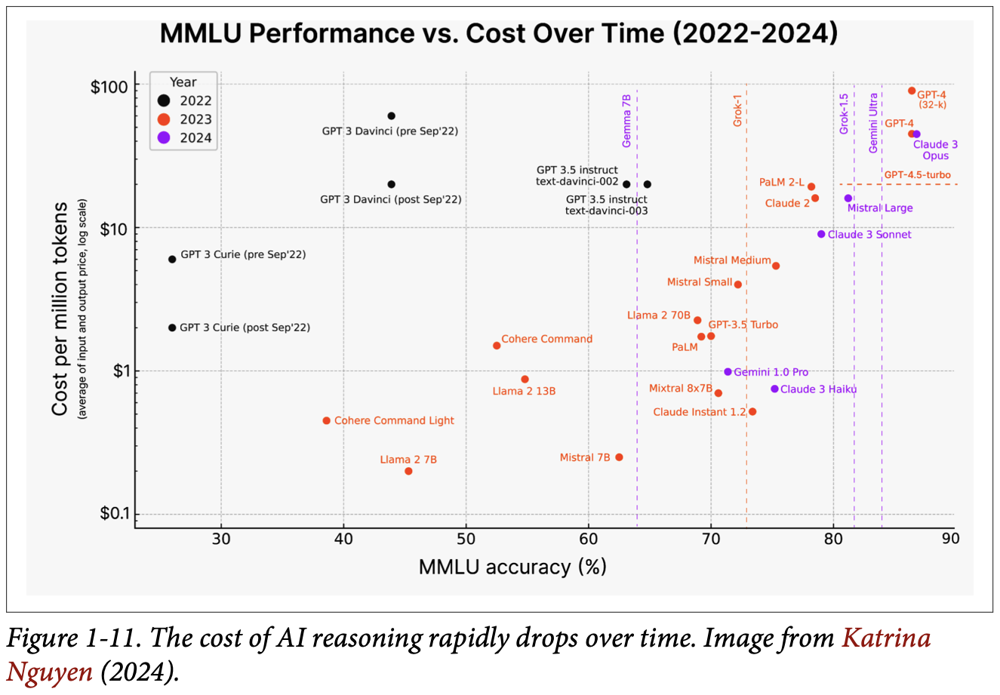
How to read this figure. It is a scatter plot titled "MMLU Performance vs. Cost Over Time (2022–2024)". X-axis: MMLU accuracy, 30–90%. Y-axis: cost per million tokens (average of input and output price), on a log scale from $0.1 to $100. Dots are coloured by year: black 2022, red 2023, purple 2024. The 2022 dots (GPT-3 Davinci and Curie) sit high and left: expensive and weak. 2023 dots (Llama 2, Mistral 7B, Mixtral 8x7B, GPT-3.5 Turbo, Claude Instant, PaLM, GPT-4) spread right and down. 2024 dots (Claude 3 Haiku/Sonnet/Opus, Gemini 1.0 Pro, Mistral Large) push further right. Vertical dashed lines mark the accuracy of models like Gemma 7B, Grok-1, Grok-1.5 and Gemini Ultra. Read it horizontally: for the same accuracy, newer models cost much less. E.g., about 63–65% accuracy cost around $20 per million tokens in 2022 (GPT-3.5 instruct), while slightly higher accuracy (~70%) cost around $1 or less in 2023–24 (Mixtral 8x7B, Gemini 1.0 Pro).
All prices are modelled. The scenario (providers halve prices and in-house becomes the expensive option) is the book's.
As providers converge on the same API, swapping one model API for another gets easier. But each model has its own quirks, strengths and weaknesses, so you must adjust workflows, prompts and data to the new model. Without good versioning and evaluation infrastructure, this causes headaches.
Rules on intellectual property (IP) and AI use are still evolving. If you build on a model trained on other people's data, can you be sure your product's IP will always be yours? Many IP-heavy companies, such as game studios, hesitate to use AI for fear of losing their IP later.
Running a shop on a road under construction. Sometimes the new flyover brings more customers (good change). Sometimes the diversion means you must move your signboard (adaptable change). Sometimes a new rule says no shops on that stretch at all (fatal change). Where it breaks: road works are announced; AI price cuts and regulations can arrive overnight.
When the ground shifts this fast, the best defence is optionality: thin abstraction over providers, an evaluation suite you can rerun on any new model, versioned prompts, and contracts you can exit. These turn a painful migration into a measured experiment.
"How do you design for model churn?" Say: "Put an LLM gateway in front of providers so switching is config, version prompts with the model they were tuned for, and keep an evaluation set that runs in CI on every model or prompt change. Then a price cut or a better model is a quick A/B decision, not a rewrite."
AI engineering's growth brought huge hype and FOMO (fear of missing out). New tools, techniques, models and apps every day can overwhelm. Rather than chase shifting sand, Huyen looks at the fundamental building blocks.
Key point: AI engineering evolved out of ML engineering. When a company starts experimenting with foundation models, its existing ML team naturally leads. Some companies treat AI engineering and ML engineering as the same thing:
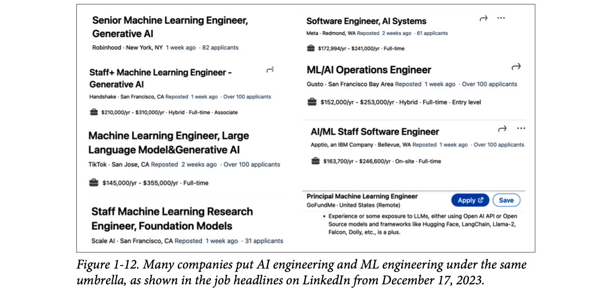
How to read this figure. Eight job cards. The titles keep the words "Machine Learning Engineer" and bolt on generative AI: "Senior Machine Learning Engineer, Generative AI" (Robinhood), "Staff+ Machine Learning Engineer – Generative AI" (Handshake, $210K–$310K), "Machine Learning Engineer, Large Language Model & Generative AI" (TikTok, $145K–$355K), "Staff Machine Learning Research Engineer, Foundation Models" (Scale AI), plus "Software Engineer, AI Systems" (Meta), "ML/AI Operations Engineer" (Gusto), "AI/ML Staff Software Engineer" (Apptio). GoFundMe's Principal ML Engineer listing says experience with LLMs (OpenAI API, Hugging Face, LangChain, Llama-2, Falcon, Dolly) is a plus. The message: AI work filed under the ML job family.
Others have separate AI engineering job descriptions:
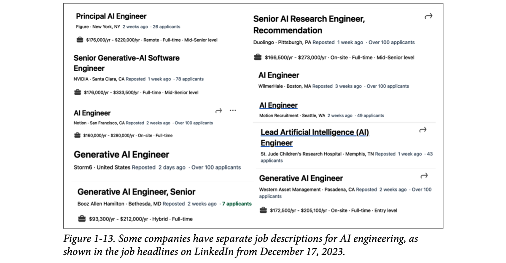
How to read this figure. Here the titles say "AI Engineer" directly: "Principal AI Engineer" (Figure, $176K–$220K), "Senior Generative-AI Software Engineer" (NVIDIA, $176K–$333.5K), "AI Engineer" (Notion, $160K–$280K; also WilmerHale, Motion Recruitment), "Generative AI Engineer" (Storm6, Western Asset Management), "Generative AI Engineer, Senior" (Booz Allen Hamilton), "Senior AI Research Engineer, Recommendation" (Duolingo), "Lead Artificial Intelligence (AI) Engineer" (St. Jude Children's Research Hospital). Even non-tech employers (a law firm, a hospital, an asset manager) hire this title.
Wherever organisations place them, the roles overlap a lot. ML engineers can add AI engineering to their skills to widen job options, but there are also AI engineers with no prior ML experience.
To see how AI engineering differs, the next section breaks the app-building process into layers and looks at each layer's role in AI vs ML engineering.
"Cardiologist" vs "doctor, cardiology". Some hospitals list it as a separate role, some as a speciality inside general medicine. Same skills overlap, different label. Where it breaks: you can't be a cardiologist without medical school, but you can be an AI engineer without classic ML training.
"You're a backend engineer; why are you qualified for an AI engineer role?" Say: "AI engineering is mostly building products on foundation models: APIs, latency, evaluation, data pipelines, retrieval, reliability. That's backend work with models in the stack. I've shipped realtime voice agents, tool-calling agents and RAG memory in production, and I'm deepening the ML side for debugging and optimisation."
Every AI application stack has three layers. You'll usually start at the top and move down only as needed:
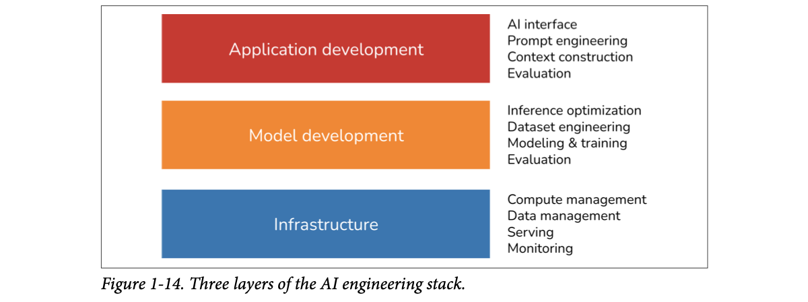
How to read this figure. Top (red) application development: AI interface, prompt engineering, context construction, evaluation. Middle (orange) model development: inference optimization, dataset engineering, modeling & training, evaluation. Bottom (blue) infrastructure: compute management, data management, serving, monitoring. Note that evaluation appears in two layers.
In March 2024, Huyen searched GitHub for all AI-related repositories with at least 500 stars, treating GitHub as a good proxy for the ecosystem. She also included repos for applications and models (the products of the app-development and model-development layers). Total: 920 repositories.
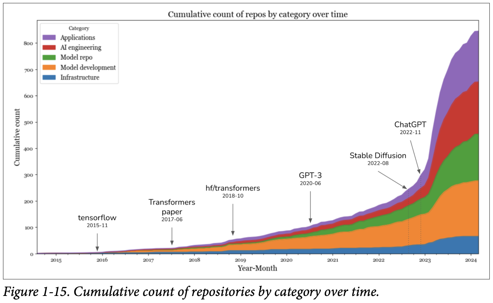
How to read this figure. A stacked area chart, 2015 → 2024, y-axis = cumulative repo count (0 to about 850). Five coloured bands, bottom to top: infrastructure (blue), model development (orange), model repo (green), AI engineering (red), applications (purple). Annotations mark tensorflow (2015-11), the Transformers paper (2017-06), hf/transformers (2018-10), GPT-3 (2020-06), Stable Diffusion (2022-08) and ChatGPT (2022-11). Until 2022 the total climbs slowly to about 250. After Stable Diffusion and ChatGPT it rockets to about 850 by 2024. The purple (applications) and red (AI engineering, i.e. app-development tooling) bands grow most; the blue infrastructure band stays thin.
Band sizes are rough, modelled reconstructions of the chart's shape, only to show which layers grew fastest; exact counts are not given in the book's text.
The data shows a big jump in AI tooling in 2023, after Stable Diffusion and ChatGPT. The fastest-growing categories were applications and application development. Infrastructure grew, but much less. That's expected: models and apps changed, but core infrastructure needs (resource management, serving, monitoring) stayed the same.
So much of what ML engineers learned over the last decade still applies, which makes it easier for everyone to start. On top of those principles sit many innovations unique to AI engineering, which the book explores.
A restaurant: the dining room and menu (application development), the kitchen and recipes (model development), and the building, gas line and cold storage (infrastructure). New cuisines changed menus and kitchens a lot; the gas line hardly changed. Where it breaks: in AI, many app teams never enter the "kitchen" at all; they buy the dish ready-made via API.
Foundation models moved the point of differentiation up the stack. When everyone can call the same model, value comes from what you put around it (context, prompts, evaluation, UX), so tooling for that layer exploded, while the plumbing below stayed familiar.
"Walk me through the stack of an LLM app you built." Use the three layers: "Application: prompts, retrieval/context, evaluation, the voice or chat interface. Model: which model, any finetuning, inference optimisations like caching or quantisation. Infrastructure: serving, GPU or API capacity, data stores, monitoring and tracing."
Knowing what changed helps teams adapt existing platforms and helps developers pick skills to learn. At a high level, building on foundation models differs from traditional ML engineering in three ways:
| # | Traditional ML engineering | AI engineering | So… |
|---|---|---|---|
| 1 | You train your own models. | You use a model someone else trained. | Less modeling and training, more model adaptation. |
| 2 | Smaller models. | Bigger models, more compute, higher latency. | More pressure for efficient training and inference optimization. Companies need more GPUs and bigger clusters, so more need for engineers who can work with GPUs and big clusters. Footnote 23: a Fortune 500 head of AI said his team knows how to work with 10 GPUs but not 1,000. |
| 3 | Mostly close-ended outputs. | Open-ended outputs. | More flexible, but harder to evaluate: evaluation becomes a much bigger problem. |
In short, AI engineering is less about developing models and more about adapting and evaluating them.
Adaptation techniques split by whether they update the model weights:
A simplified rule of thumb built from the book's trade-offs; Chapter 7 gives the full decision.
Next, the book zooms into model development (what ML engineers know best) and then application development. This is an overview; how each process works is covered throughout the book.
Prompting is giving a skilled cook a detailed order slip ("less oil, extra jeera, like my mother makes"). Finetuning is sending the cook to train in your mother's kitchen for a month. Where it breaks: the order slip must be repeated on every order (prompt tokens cost money every call); the training sticks, but you must redo it for each new cook (model).
Prompts steer behaviour the model already has by changing the input it conditions on. Finetuning shifts the weights, so it can add behaviours, compress long instructions into the model (shorter prompts → lower cost and latency), or make a small model do a big model's narrow job.
"How is AI engineering different from ML engineering?" Say: "Three things: we adapt pre-trained models instead of training from scratch; the models are much bigger, so inference cost, latency and GPU skills matter more; and outputs are open-ended, so evaluation is the hardest problem. Adaptation is either prompt-based, no weight changes, or finetuning, which changes weights."
Model development is the layer most linked to traditional ML engineering. It has three main responsibilities: modeling and training, dataset engineering, and inference optimization. Evaluation is needed too, but since most people meet it first in the application layer, it's covered there (plate 36).
Modeling and training means designing a model architecture, training it and finetuning it. Example tools: Google's TensorFlow, Hugging Face's Transformers, Meta's PyTorch.
Building ML models needs specialised knowledge:
With foundation models, ML knowledge is no longer a must-have for building AI apps. Huyen has met many successful app builders with zero interest in gradient descent. But ML knowledge is still extremely valuable: it widens the tools you can use and helps troubleshoot when a model misbehaves.
# Illustrative: what "training" means at its core (PyTorch-style, our own toy)
for batch_x, batch_y in loader:
pred = model(batch_x) # forward pass
loss = loss_fn(pred, batch_y) # how wrong are we?
loss.backward() # gradients: which way to nudge each weight
optimizer.step() # gradient descent: update the weights
optimizer.zero_grad()Every line here changes weights; none of it happens when you only write prompts. That's the line between "training" and "prompt engineering" (next plate).
Driving a car vs being a mechanic. You can drive very well without knowing how the gearbox works. But when the car makes a strange noise on the ghat road, the person who knows engines diagnoses it. Where it breaks: cars rarely change; models change monthly, so the "mechanic" knowledge also needs updating.
"Do you need ML theory for AI engineering?" Say: "Not to ship the first version, but it's what lets me debug: understanding loss, overfitting, tokenization or attention cost explains odd outputs, and it opens options like finetuning or quantisation when prompting isn't enough."
Training always changes model weights, but not every weight change is training. Quantization, reducing the precision of weights, technically changes weight values but isn't training.
"Training" is often used for three different phases:
| Term | Starts from | What it means | Notes |
|---|---|---|---|
| Pre-training | Random weights | Training from scratch. For LLMs, usually training for text completion. | By far the most resource-hungry step: for InstructGPT, pre-training took up to 98% of total compute and data. Takes a long time; a small mistake can cost a lot of money and set the project back. Only a few practise this "art", and experts are heavily sought after (footnote 24: and get incredible pay packages). |
| Finetuning | Weights from a previous training run | Continuing to train an already-trained model. | Needs fewer resources (data, compute) than pre-training because the model already knows things. |
| Post-training | A pre-trained model | Training after pre-training. | Conceptually the same as finetuning. Convention: post-training when done by model developers (e.g., OpenAI making a model follow instructions before release); finetuning when done by application developers (e.g., you adapting an OpenAI model, which may itself have been post-trained). |
Pre-training and post-training form a spectrum; their processes and tools are very similar (Chapters 2 and 7 explore the differences). Footnote 25: if you find "pre-training" and "post-training" unimaginative, you're not alone; the AI research community is great at many things but not naming. "Large language model" is vague because of "large", and Huyen wishes people would stop titling papers "X is all you need".
Some people call prompt engineering "training", which is wrong. A Business Insider writer said she "trained" ChatGPT to imitate her younger self by feeding it her childhood journal entries. Colloquially fine, since she was teaching it something, but technically, teaching a model through the context you put in its input is prompt engineering. Likewise, people say "finetuning" when they're really prompt engineering.
Pre-training is 12 years of schooling; post-training is the company's induction programme before you start; finetuning is your team lead teaching you the team's way of working. Prompting is a sticky note on your monitor for today's task. Where it breaks: the sticky note disappears when the chat ends; the training stays in the weights.
"Is RAG or prompting a form of training?" Say: "No. Training changes weights. Prompting and RAG only change the input context, so they're inference-time adaptation. Quantization changes weights too but isn't training. Post-training vs finetuning is mostly about who does it: the model lab or the app developer."
Dataset engineering is curating, generating and annotating the data needed to train and adapt AI models.
Many argue that because models are now commodities, data will be the main differentiator, making dataset engineering more important than ever. How much data you need depends on the adaptation technique:
Only the order is from the book; bar lengths are illustrative.
Whatever the amount, data expertise helps when examining a model: its training data gives important clues about its strengths and weaknesses.
Timings are modelled; the spam-vs-essay contrast is the book's.
Grading an MCQ paper vs grading essays in a board exam. MCQs: one key, fast, everyone agrees. Essays: slow, and two examiners give different marks. Where it breaks: at least exam essays have a marking scheme; many AI tasks don't even have that until you write one.
Pre-trained models already learned from huge raw text, so your data's job shifts from "teach everything" to "steer and specialise": small, clean, deduplicated, safe examples, and documents to retrieve at runtime. Quality matters more than quantity.
"What does data work look like for an LLM app?" Say: "Less feature engineering, more deduplication, chunking and tokenization for retrieval, PII and toxicity filtering, and building small high-quality eval and finetuning sets, often with AI-assisted labelling reviewed by humans."
Inference optimization means making models faster and cheaper. It has always mattered in ML engineering: users never refuse faster models, and companies always benefit from cheaper inference. As foundation models grow and cost and latency rise, it matters even more.
A specific challenge: foundation models are often autoregressive, so tokens are generated sequentially. At 10 ms per token, a 100-token output takes one second, longer for longer outputs. Users are notoriously impatient, and getting AI apps down to the ~100 ms expected of a typical internet app is a huge challenge. Inference optimization is now an active subfield in industry and academia.
Defaults reproduce the book's example (10 ms × 100 tokens = 1 s). Ignores prompt processing time.
| Category | Building with traditional ML | Building with foundation models |
|---|---|---|
| Modeling and training | ML knowledge is required for training a model from scratch | ML knowledge is a nice-to-have, not a must-havea |
| Dataset engineering | More about feature engineering, especially with tabular data | Less about feature engineering and more about data deduplication, tokenization, context retrieval, and quality control |
| Inference optimization | Important | Even more important |
a. Many people dispute this and say ML knowledge is a must-have.
Inference optimization techniques, including quantization, distillation and parallelism, are covered in Chapters 7 through 9.
A typist who can only type one letter at a time and must reread the whole page before each letter. However fast each letter is, a long letter takes long. Where it breaks: real systems cache the "rereading" (KV cache) and serve many users at once (batching), so the picture overstates the waste.
Each new token depends on all previous ones, so decoding can't simply be parallelised across the output. Speedups come from making each step cheaper (quantization, smaller distilled models), doing several steps' work at once (speculative decoding), or splitting the model over GPUs (parallelism).
"Why are LLM responses slow, and what can you do?" Say: "Generation is autoregressive: one token per forward pass, so latency scales with output length. At 10 ms/token, 100 tokens is a second. Fixes: stream tokens, keep outputs short, cache prompts, use smaller or quantized models, batch on the server, and speculative decoding. For voice I mainly chase time-to-first-token."
In traditional ML, teams build apps on their own proprietary models, so model quality is a differentiator. With foundation models, many teams use the same model, so differentiation must come from the application development process.
The application development layer has three responsibilities: evaluation, prompt engineering, and AI interface.
Evaluation is about reducing risks and uncovering opportunities. It is needed throughout adaptation: to select models, benchmark progress, decide if an app is ready to deploy, and detect issues and opportunities in production.
It matters even more with foundation models (Chapter 3 discusses why). In short, the challenges come from open-endedness and broader capabilities. In a close-ended task like fraud detection there's an expected ground truth to compare with: if the output differs, the model is wrong. For a chatbot, there are so many possible good replies that you can't list all correct answers.
Having so many adaptation techniques also complicates evaluation: a system that does badly with one technique might do much better with another. When Google launched Gemini in December 2023, it claimed Gemini beat ChatGPT on MMLU. But Google evaluated Gemini with a prompting technique called CoT@32, showing Gemini 32 examples, while ChatGPT got only 5. With five examples each, ChatGPT did better:
| Gemini Ultra | Gemini Pro | GPT-4 | GPT-3.5 | PaLM 2-L | Claude 2 | Inflection-2 | Grok 1 | Llama-2 | |
|---|---|---|---|---|---|---|---|---|---|
| Row 1 | 90.04% CoT@32 | 79.13% CoT@8 | 87.29% CoT@32 (via API) | 70% 5-shot | 78.4% 5-shot | 78.5% 5-shot CoT | 79.6% 5-shot | 73.0% 5-shot | 68.0% |
| Row 2 | 83.7% 5-shot | 71.8% 5-shot | 86.4% 5-shot (reported) |
Values from Table 1-5. "Best-reported": Gemini Ultra CoT@32, GPT-4 87.29% CoT@32 via API. "Both 5-shot": Gemini Ultra 83.7%, GPT-4 86.4%.
Two students' marks compared, but one wrote an open-book exam with 32 solved examples and the other a closed-book exam with 5. The "topper" changes when the rules are the same. Where it breaks: students can be retested easily; with AI you must read the fine print of every benchmark claim.
An LLM's score is a property of model plus prompt plus setup (few-shot count, chain-of-thought, sampling). Change any of them and the score moves. So a fair comparison holds everything but the model fixed, and your own eval must use the prompts you'll actually ship.
"A vendor says their model beats GPT-4 on MMLU. Do you switch?" Say: "First check the setup: Gemini's 90% used CoT@32 vs GPT-4's 5-shot; at 5-shot GPT-4 was ahead, 86.4 vs 83.7. Then ignore public benchmarks and run our own eval set with our prompts, plus latency and cost." That's an answer interviewers love.
Prompt engineering is getting AI models to show the behaviour you want from the input alone, without changing weights. The Gemini story shows its power: a different prompting technique moved Gemini Ultra's MMLU score from 83.7% to 90.04%.
Prompts alone can make a model do amazing things: the right instructions get it to do your task, in your chosen format.
Prompt engineering is not just telling the model what to do. It's also giving it the necessary context and tools. For complex tasks with long context, you may also need a memory management system so the model can track its history. Chapter 5 covers prompt engineering; Chapter 6 covers context construction.
Briefing a new site engineer: the job (instructions), the drawings and soil report (context), the toolbox (tools), and the site diary so far (memory). Skip any one and even a brilliant engineer guesses. Where it breaks: the engineer remembers the diary tomorrow; the model only "remembers" what you put back into its context each call.
The model predicts the next token conditioned on everything in its context window. Instructions, retrieved documents, tool definitions and conversation memory are all just tokens in that window, so "context construction" is deciding which tokens to spend that limited window on.
"What's context engineering?" Say: "Deciding what goes into the model's window for each call: system instructions, retrieved documents, tool schemas, and a compressed memory of past turns, within the token budget. In my RAG memory work that's the core problem: picking what to recall so the agent stays accurate without blowing latency."
AI interface means building the interface through which end users use your AI app. Before foundation models, only organisations that could develop AI models could build AI apps, and these were usually embedded in their own products: fraud detection inside Stripe, Venmo and PayPal; recommenders inside Netflix, TikTok and Spotify.
With foundation models, anyone can build AI apps, as standalone products or embedded in other products, including other people's. ChatGPT and Perplexity are standalone; GitHub Copilot is mostly used as a VSCode plug-in; Grammarly as a browser extension for Google Docs; Midjourney via its own web app or its Discord integration.
Tools are needed to build standalone interfaces or to integrate AI into existing products. Interfaces gaining popularity:
Chat is the most common, but interfaces can also be voice-based (voice assistants) or embodied (augmented and virtual reality).
New interfaces also mean new ways to collect user feedback. Conversation makes it much easier for users to give feedback in natural language, but that feedback is harder to extract (Chapter 10).
| Category | Building with traditional ML | Building with foundation models |
|---|---|---|
| AI interface | Less important | Important |
| Prompt engineering | Not applicable | Important |
| Evaluation | Important | More important |
No thumbs-down was clicked, yet the user just told you two errors (wrong time, wrong car class). Extracting this means detecting corrections in natural language, which is harder than counting clicks. (Invented example.)
Before: only big chains had their own kitchens, and the food was served only in their restaurants. Now anyone can cook and sell through Swiggy, a stall, a tiffin service or a WhatsApp group. The "interface" is wherever the customer already is. Where it breaks: each channel has its own rules and limits (a WhatsApp message can't show a rich dashboard).
"How do you collect feedback for an LLM product?" Say: "Explicit signals like thumbs and ratings, plus implicit ones mined from the conversation: rephrasing, corrections, abandonment, escalation to a human. In a voice agent, barge-in and 'no, I meant…' are strong negative signals."
The new weight on application development, especially interfaces, brings AI engineering closer to full-stack development. Footnote 27: Anton Bacaj told Huyen that AI engineering is "just software engineering with AI models thrown in the stack".
Because interfaces matter more, AI tooling is being designed to attract frontend engineers. Traditionally ML was Python-centric: before foundation models, the popular ML frameworks mostly supported Python APIs. Python is still popular, but JavaScript support is growing: LangChain.js, Transformers.js, OpenAI's Node library, and Vercel's AI SDK.
Many AI engineers come from traditional ML, but more and more come from web development or full-stack backgrounds. Their edge over traditional ML engineers: they can quickly turn ideas into demos, get feedback, and iterate.
In traditional ML you usually start by gathering data and training a model; building the product comes last. With models readily available, you can build the product first and invest in data and models only once the product shows promise:
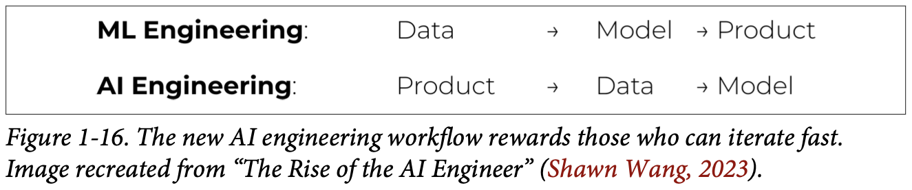
How to read this figure. Two rows with the same three words in different orders. ML engineering: Data → Model → Product. AI engineering: Product → Data → Model. The product moved from last to first.
Week counts are modelled to show when users first see something; the order of steps is the book's.
In traditional ML engineering, model development and product development are often separate, and at many organisations ML engineers rarely take part in product decisions. With foundation models, AI engineers tend to be much more involved in building the product.
Old way: build a factory, then design the biscuit, then see if anyone buys it. New way: bake a batch at home, sell it at the Sunday market, and build the factory only if people keep coming back. Where it breaks: the home batch hides scale problems (cost, latency, edge cases) that appear only when you "build the factory".
When a capable model is one API call away, the slowest, riskiest step (getting a working model) is no longer first. So the fastest learning loop is to ship a thin product, watch real users, and let that usage tell you which data to collect and whether a custom model is worth it.
"Why hire a backend/full-stack engineer for AI?" Say: "Because the AI workflow is product → data → model. The bottleneck is shipping and iterating with real users, and integrating models reliably into systems: APIs, streaming, latency, observability. I can turn an idea into a working voice or chat agent quickly, then use production data to decide on finetuning."
Huyen meant the chapter to do two things: explain why AI engineering emerged as a discipline (because foundation models became available), and give an overview of the process of building on them. As an overview, it only touched many ideas lightly; later chapters go deep.
| Term | Meaning (plain words) | Plate |
|---|---|---|
| AI engineering | Building applications on top of readily available foundation models | 9 |
| Model as a service | Models offered through APIs so you don't host them | 1, 11 |
| Language model | Statistics of language: how likely a token is in a context | 3 |
| Token / tokenization / vocabulary | Unit of text (char, word, sub-word) / cutting text into tokens / the set of all tokens a model knows | 3 |
| Masked LM | Predicts a missing token using both sides (BERT) | 4 |
| Autoregressive (causal) LM | Predicts the next token from previous tokens only; used for generation | 4 |
| Generative AI | Models that produce open-ended outputs | 4 |
| Prompt / completion | Input text / the model's continuation of it | 4 |
| Supervision | Training on human-labelled data | 5 |
| Self-supervision | Labels inferred from the input data itself (next token) | 5 |
| Unsupervised learning | Learning with no labels at all | 5 |
| BOS / EOS | Special tokens marking beginning / end of a sequence | 5 |
| Parameter (weight) | A variable in the model updated by training; count = model size | 6 |
| Modality / multimodal model / LMM | Kind of data (text, image…) / handles several / generative multimodal model | 7 |
| Foundation model | LLMs and LMMs: big general models you build on | 7 |
| Natural language supervision | Using co-occurring (image, text) pairs as labels (CLIP) | 7 |
| Embedding | A vector that tries to capture the meaning of data | 7 |
| Prompt engineering | Adapting a model via instructions and context, no weight changes | 8, 37 |
| RAG | Retrieval-augmented generation: supplement the prompt with retrieved data | 8 |
| Finetuning | Further training a trained model; changes weights | 8, 33 |
| Exposure (to AI) | A task is exposed if AI cuts its time by ≥50% | 13 |
| Agent | AI that can plan and use tools | 22 |
| Human-in-the-loop / Crawl-Walk-Run | Humans involved in AI decisions / gradually increasing automation | 24 |
| Moat, data flywheel | Defensible advantage; usage data improving the product, which brings more usage | 25 |
| Usefulness threshold | How good the product must be before it's useful | 26 |
| TTFT / TPOT | Time to first token / time per output token | 26 |
| Last-mile challenge | 0→60 is easy, 60→100 is very hard | 27 |
| Inference | Computing an output for an input | 28 |
| MMLU | Massive Multitask Language Understanding benchmark | 28, 36 |
| Pre-training / post-training | Training from random weights / training after pre-training (by model developers) | 33 |
| Quantization | Lowering weight precision; changes weights but isn't training | 33 |
| Dataset engineering | Curating, generating, annotating data for training/adapting | 34 |
| Inference optimization | Making models faster and cheaper | 35 |
| CoT@32 / 5-shot | Chain-of-thought prompting with 32 examples / prompting with 5 examples | 36 |
| AI interface | How end users interact with the AI app | 38 |
| Name | What it is / does in this chapter |
|---|---|
| OpenAI: GPT, GPT-2, GPT-4, GPT-4V, ChatGPT, CLIP, InstructGPT | Model-as-a-service pioneer; GPT-4 tokenizer (vocab 100,256); CLIP trained on 400M image-text pairs; InstructGPT's pre-training ≈ 98% of compute |
| Google: Gemini (ex-Bard), Google Photos, Image Search, Maps, Docs, Gmail | Multimodal foundation model; CoT@32 MMLU claim; AI photo search; proactive traffic alerts; Smart Compose |
| Anthropic: Claude 2, Claude 3 | Image + text understanding; listed in MMLU comparisons |
| Mistral: Mixtral 8x7B | Vocabulary of 32,000 tokens; well-funded startup building foundation models |
| BERT (Google) | Classic masked language model |
| AlexNet / ImageNet | Supervised deep learning breakthrough; 1M+ images, 1,000 classes |
| Flamingo, LLaVA | Generative multimodal models built on multimodal embedding backbones |
| Hugging Face Transformers, PyTorch, TensorFlow | Modeling and training frameworks |
| LangChain (+ LangChain.js), Ollama, AutoGPT, Stable Diffusion web UI | Open-source AI engineering tools whose GitHub stars passed Bitcoin's in two years |
| Transformers.js, OpenAI Node library, Vercel AI SDK | JavaScript APIs pulling frontend engineers into AI |
| Streamlit, Gradio, Plotly Dash | Common tools for AI web apps |
| GitHub Copilot, Magic, Anysphere, gpt-engineer, screenshot-to-code | AI coding: Copilot passed $100M ARR in two years |
| Midjourney, Adobe Firefly, Runway, Pika Labs, Sora | Creative image/video generation; Midjourney $200M ARR at 1.5 years |
| Grammarly, Notion, HubSpot, Salesforce | Writing assistance; Grammarly finetunes a model |
| Duolingo, Khan Academy, Chegg | AI in education; Chegg's share price fell from $28 to $2 |
| Inworld, Convai (NVIDIA demos) | Smart NPCs in games |
| Instacart | Internal prompt marketplace; "Fast Breakdown" template |
| Amazon SageMaker Ground Truth | Data labelling service: 8¢ → 2¢ per image with scale |
| Microsoft | Crawl-Walk-Run automation framework |
| 80% in 1 month, 4 more months to pass 95% | |
| Calendly, Mailchimp, Photoroom | "Could have been a feature" companies that won |
| Stripe, Venmo, PayPal, Netflix, TikTok, Spotify | Pre-foundation-model AI embedded in own products |
| Perplexity, VSCode, Shopify, Microsoft 365, Slack, Discord, WeChat, WhatsApp | Standalone apps and integration surfaces for AI interfaces |
Models became more capable (more tasks, more apps), and training them became so expensive that only a few organisations can, leading to model as a service. Net: demand up, barrier down.
About 1,500 words (1 token ≈ ¾ word).
Tokens carry meaningful pieces (cook + ing); fewer unique tokens than words, so a smaller, more efficient vocabulary; unknown words can still be split into known parts (chatgpt + ing).
A masked model, because it uses context both before and after a position, which is what finding an error in the middle of code needs.
Six: one per token to predict (4 words + "." + EOS), each with all preceding tokens as context, as in Table 1-1.
Self-supervised: labels are inferred from the data (the next token). Unsupervised: no labels at all.
You'd waste compute: a smaller model could match or beat it on that data. Big models need more data to reach their potential.
It isn't generative: it produces joint text-image embeddings, not open-ended output. It's a backbone for generative multimodal models like Flamingo and LLaVA.
General-purpose AI capabilities; increased AI investments; low entrance barrier (APIs, little coding, plain English).
Lower risk: fewer privacy, compliance and catastrophic-failure risks, while still building AI expertise. (a16z: 60–62% deployed for internal uses vs 39% for external chatbots.)
Reactive usually needs low latency. Proactive can be precomputed but needs a higher quality bar, because users didn't ask and low quality feels intrusive.
Technology, data, distribution. Tech is similar for everyone, distribution favours big firms; data is the nuanced one: a startup first to market can build a data flywheel.
Probably not. LinkedIn reached 80% in one month and needed four more to pass 95% (hallucinations, kinks). Build an eval set from real traffic and plan for the long tail.
Neither. Quantization changes weights but isn't training. Pasting context is prompt engineering, since weights don't change.
Adapt existing models rather than train your own; bigger models make inference optimization and GPU skills more important; open-ended outputs make evaluation much harder. Workflow becomes product → data → model, and AI interface and prompt engineering become important.
This book cites sources inline (as links) rather than in an end-of-chapter list. These are the works named in Chapter 1.